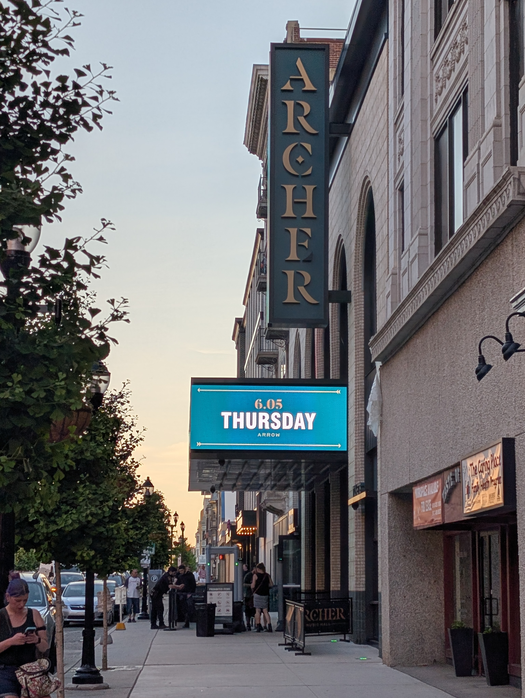
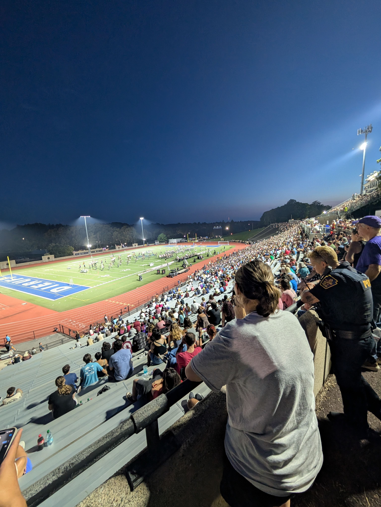
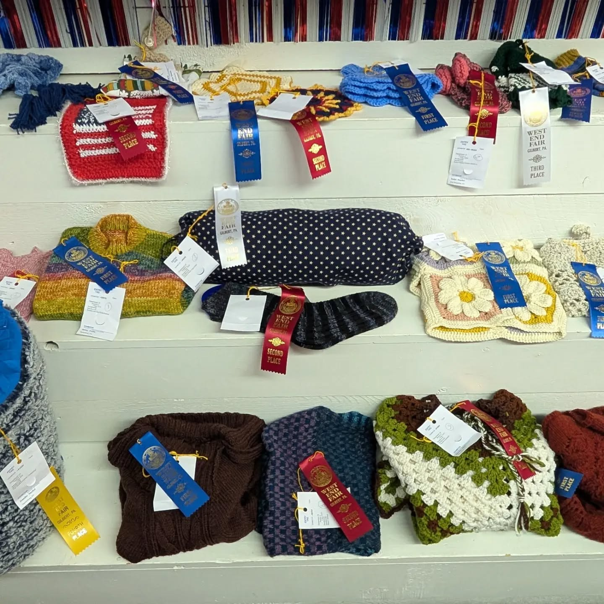

Days of Summer
September 7, 2026
Today marked the end of summer, which has felt short in the length of time passed but also long in the shear amount of happenings which took place in that time—good and bad.
Commencement address
Summer started with a great honor for me, which was serving as the Alumni Association's representative to welcome new graduates of the Northampton Community College Pocono Campus to officially become alumni.
My three-minute speech centered around the idea of community college being a foundation rather than a stepping stone. It is easy to think of yourself moving beyond an institution once you graduate, when in reality everything you learned and experienced shaped the current version of you and influenced how you will take your next steps.
I return to the classroom (virtual and in-person) this semester, giving me the opportunity to meet and work with more amazing students.
Thursday concert
I lived a near-twenty-year dream of mine by seeing one of my favorite bands live in concert. The same sister who introduced me to Thursday when I was in middle school joined me for an absolute blast of an evening. Thursday is a band who has influenced and produced so many popular artists in the emo and hardcore scene, though their success seemed to never reach those same heights. That being said, this may go down as my all-time favorite concert.
I was inches away from Geoff Rickly and the rest of the band while hearing most of my favorite songs. I hope to go back and watch them again sooner rather than later.

Drum corps in Allentown
For the first time since 2022, I attended DCI Eastern Classic. It's surreal to think I first attended the event in 2013 as a fan, then returned as a marching member in 2014 and again as a staff member in 2017. While the shows themselves have become more complex and designed fundamentally different than when I last stepped on the field, what hasn't changed in the amount of talent these 14-21 year old marching members have.

West End Fair
The West End Fair is our county fair and has been a summer-ending staple since we moved back to the Poconos. This year was Victoria's first year entering some of her fiber arts work and each of the five pieces she entered won either first or second place in the respective categories. This put the cherry on top of the whole event, during which we visited from of our vendor friends and I stuffed my face with funnel cake.
